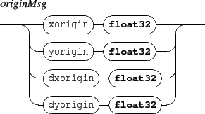
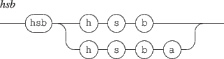
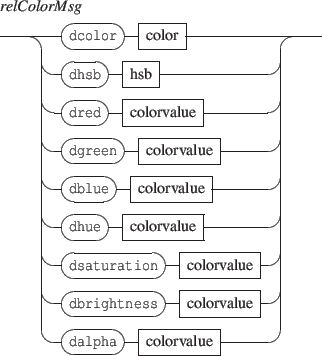
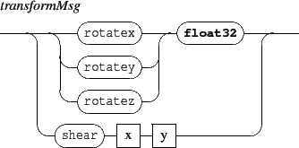
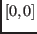

Next: 4.1.4 Components transformations
Up: 4.1 Positioning
Previous: 4.1.2 Relative positioning
Contents
Index
4.1.3 Components origin
The origin of a component is the point  such that the  coordinates and the point coincide graphically. For example, when the origin is the top left corner, the component top left corner is drawn at the coordinates.

- xorigin,yorigin are relative to the component coordinates space i.e. , where -1 is the top or left border and 1 is the bottom or right border. The default origin is  i.e. the component is centered on its coordinates.
- dxorigin,dyorigin represents displacement of the current xorigin or yorigin.
Grame - INScore project